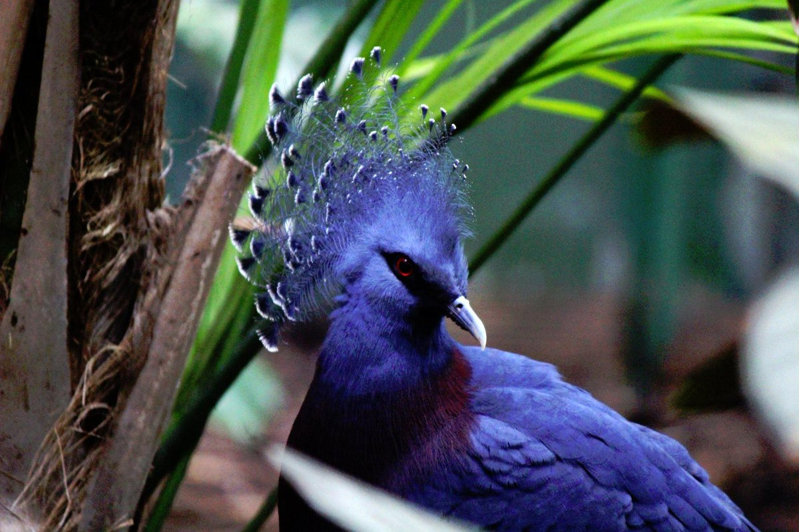

hey guys, itz me...i came across many social posts about a mysterious mythical bird. it was looking cool in its colour, feathers and beauty. i went on a research in it and fetched some info. Here they are
By the research of national geography, it is said to be living in the dense forest of Kailasa. it is a 100% vegan whose diet filled with plums that grows on the forest trees. it is not migratory. and its endagered. Scientists named it as Blue-red robin. By census, it came to know very few, one in thousand, saw this bird. They are of family Genissa pectaetra. Historic people hunted it for the high uranium content in it. its feather are helpful to cure cosorona mythelis, caused by a virus. so the people started hunting it, and lowered their population. And the bird flu that broke out on Kailasa was also a major cause of death of these beautiful creatures.